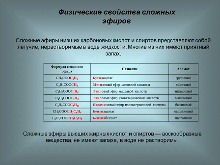

Физические свойства
Сложные эфиры низших карбоновых кислот и простейших спиртов — бесцветные летучие жидкости, часто с приятным фруктовым запахом; сложные эфиры высших карбоновых кислот — твёрдые бесцветные воскообразные вещества, практически лишённые запаха. Температура плавления высших эфиров высших карбоновых кислот зависит как от длин углеродных цепей ацильного и спиртового остатков, так и от их структуры.
Сложные эфиры входят в состав эфирных масел многих растений и фруктов, придавая им специфический приятный запах. В значительных количествах сложные эфиры представлены в природе восками. Основа природных восков — эфиры высших одноосновных кислот и высших одноатомных спиртов. Например, пчелиный воск содержит сложный эфир пальмитиновой кислоты и мирицилового спирта (мирицилпальмитат).
Сложные эфиры труднее растворимы в воде, чем образующие их спирты и кислоты. Так, этиловый спирт и уксусная кислота смешиваются с водой во всех отношениях, тогда как этилацетат трудно растворим в воде. Этилацетат образует в воде два несмешивающихся слоя (две фазы), при этом эфир имеет меньшую плотность и находится сверху. Это позволяет использовать сложные эфиры в аналитической химии как экстрагенты при экстракции различных веществ (например, изотопов) из водных растворов. Сложные эфиры плохо растворимы в воде, но хорошо — в органических растворителях (спирте, ацетоне и др.).

Химические свойства
1. Гидролиз. Сложные эфиры устойчивы в нейтральной среде, но легко разлагаются при нагревании в присутствии кислот или в присутствии щелочей. В присутствии кислот гидролиз сложных эфиров протекает как реакция, обратная этерификации. при гидролизе сложных эфиров образуются спирты и карбоновые кислоты.
R-COO-R’ + H2O = R-COOH + R’-OH
Щелочной гидролиз сложных эфиров — реакция, имеющая промышленное значение. Гидролиз жиров в присутствии оснований — древнейший способ получения мыла. Первые способы получения мыла связаны со смешиванием жира с золой. Один из основных компонентов животного жира — тристеарат глицерина. В щелочной среде тристеарат глицерина разлагается на глицерин и соль стеариновой кислоты.
2.Переэтерификация. Переэтерификация — это реакция превращения одного сложного эфира в другой под действием соответствующих спиртов в присутствии катализатора (кислоты или основания)
R-COO-CH3 + R’-OH = R-COOR’ + CH3-OH
3.Восстановление сложных эфиров. Сложные эфиры восстанавливаются с разрывом связи С-О карбоксильной группы. При этом образуется смесь спиртов.
Например, этилбензоат восстанавливается литийалюминийгидридом до бензилового спирта и этанола
C6H5-COO-C2H5 + [H] = C6H5-CH2OH + C2H5-OH
"Химия - интересная наука" - Место, где вы можете получить теоритическую и практичесткую информацию о замечательной науке - химии.